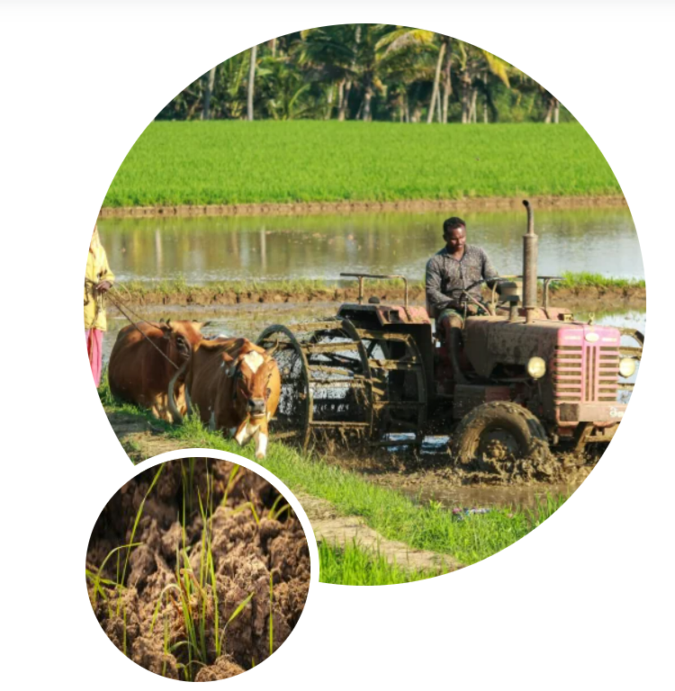

About Us

About Us
Empowering Farmers
One of the keys to our survival is how healthy food our farmers produce for close to 9 billion of us. In India, 1.5 billion people depend upon the farmers for food. At present, our efficiency of farm produce is less than a quarter of what Israel produces. Digital advancements can change this scenario for our farmers and naturally for us. In the pace of technological advancements, we had almost forgotten our breadwinners. Farming is an all hardships imagined. Lets make it easy, efficient, and profitable for our farmers.
Being born among them and seeing them struggling on the field, on the streets, in the market is the most important pain we want to reduce. Our farmers despite working very hard are left unattended to the mercy of climate or any natural course. Floods or droughts, cold waves or heats waves, animal grazing, birds pecking, fire, or any social unrest; the farm is lying unprotected with one hope. Farmers take all the risks with littel or no external assistance. A sustainable and viable intervention to optimize the agriculture sector of India is not only an undeniable need but also is a responsibility of anyone who can contribute. This is exactly why we have collaborated to play our role in reducing the pains of the farmers in the best possible ways we can.
Leadership Team: Founder bios, roles, and their contribution to agri-tech.Partners: Collaborations with government, NGOs, and agri-institutes.
Supporting farmers with smart solutions
Making agriculture resilient and rewarding

Empowering Farmers, Enriching Lives
We believe that the prosperity of farmers leads to the prosperity of the nation. Thats why we are committed to harnessing the power of technology to make farming smarter, more sustainable, and profitable for every farmer.
Rooted in Reality, Driven by Technology
Using satellite imaging, AI-driven analytics, and real-time advisory, we deliver precise, timely, and actionable solutions directly to farmersfingertips.
Why It Matters
Agriculture feeds the world, but the people behind it often go unheard. We are here to change that narrative — not just with tools, but with empathy and impact. “Biophilia is the idea that humans possess an innate tendency to seek connection with nature .At KrishiGK, we deepen that connection through
knowledge
and innovation.
Our Challenges Became Our Mission
Climate change, resource depletion, and isolation of rural communities.
Limited access to real-time information and adaptive guidance.
An urgent need for data-driven, farmer-first solutions.